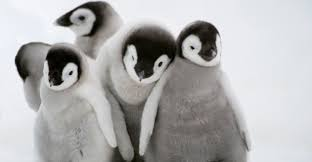
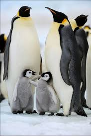

Penguins are a group of aquatic flightless birds from the family Spheniscidae of the order Sphenisciformes .[4] They live almost exclusively in the Southern Hemisphere: only one species, the Galápagos penguin, is found north of the Equator. Highly adapted for life in the ocean water, penguins have countershaded dark and white plumage and flippers for swimming. Most penguins feed on krill, fish, squid and other forms of sea life which they catch with their bills and swallow whole while swimming. A penguin has a spiny tongue and powerful jaws to grip slippery prey.[5]  They spend about half of their lives on land and the other half in the sea. The largest living species is the emperor penguin (Aptenodytes forsteri):[6] on average, adults are about 1.1 m (3 ft 7 in) tall and weigh 35 kg (77 lb). The smallest penguin species is the little blue penguin (Eudyptula minor), also known as the fairy penguin, which stands around 30-33 cm (12-13 in) tall and weighs 1.2-1.3 kg (2.6-2.9 lb).[7] Today, larger penguins generally inhabit colder regions, and smaller penguins inhabit regions with temperate or tropical climates. Some prehistoric penguin species were enormous: as tall or heavy as an adult human.[8] There was a great diversity of species in subantarctic regions, and at least one giant species in a region around 2,000 km south of the equator 35 mya, during the Late Eocene, a climate decidedly warmer than today.[9
The word penguin first appears in literature at the end of the 16th century as a synonym for the great auk.[10] When European explorers discovered what are today known as penguins in the Southern Hemisphere, they noticed their similar appearance to the great auk of the Northern Hemisphere and named them after this bird, although they are not closely related.[11] The etymology of the word penguin is still debated. The English word is not apparently of French,[12] Breton[13] or Spanish[14] origin (the latter two are attributed to the French word pingouin), but first appears in English or Dutch.[12]  Some dictionaries suggest a derivation from Welsh pen, 'head' and gwyn, 'white',[15] including the Oxford English Dictionary, the American Heritage Dictionary,[16] the Century Dictionary[16] and Merriam-Webster,[17] on the basis that the name was originally applied to the great auk, either because it was found on White Head Island (Welsh: Pen Gwyn) in Newfoundland, or because it had white circles around its eyes (though the head was black). However, the Welsh word pen can also be used to mean 'front'.[18] An alternative etymology links the word to Latin pinguis, which means 'fat' or 'oil'.[19] Support for this etymology can be found in the alternative Germanic word for penguin, fettgans or 'fat-goose', and the related Dutch word vetgans. Adult male penguins are sometimes called cocks, females sometimes called hens; a group of penguins on land is a waddle, and a group of penguins in the water is a raft.